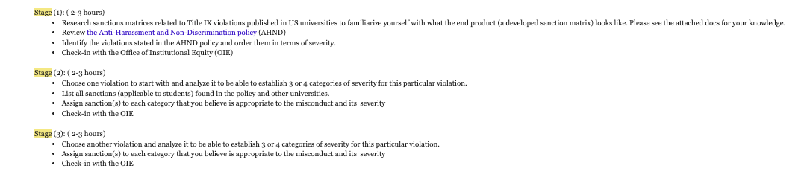
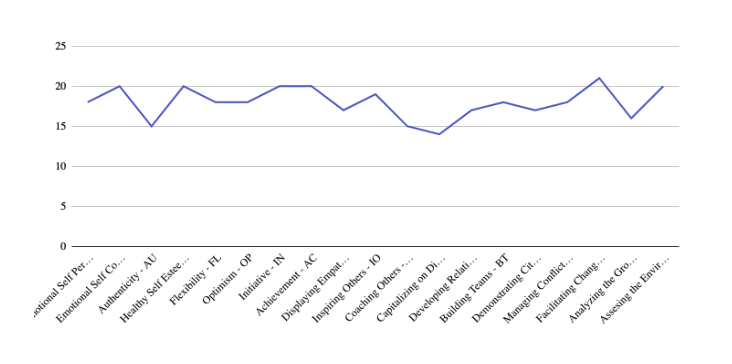
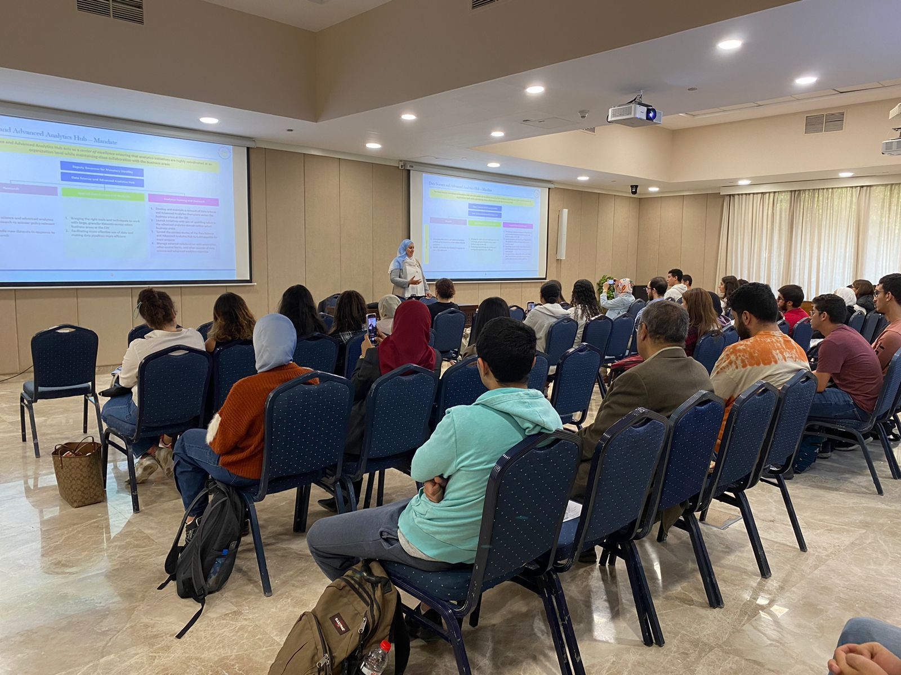
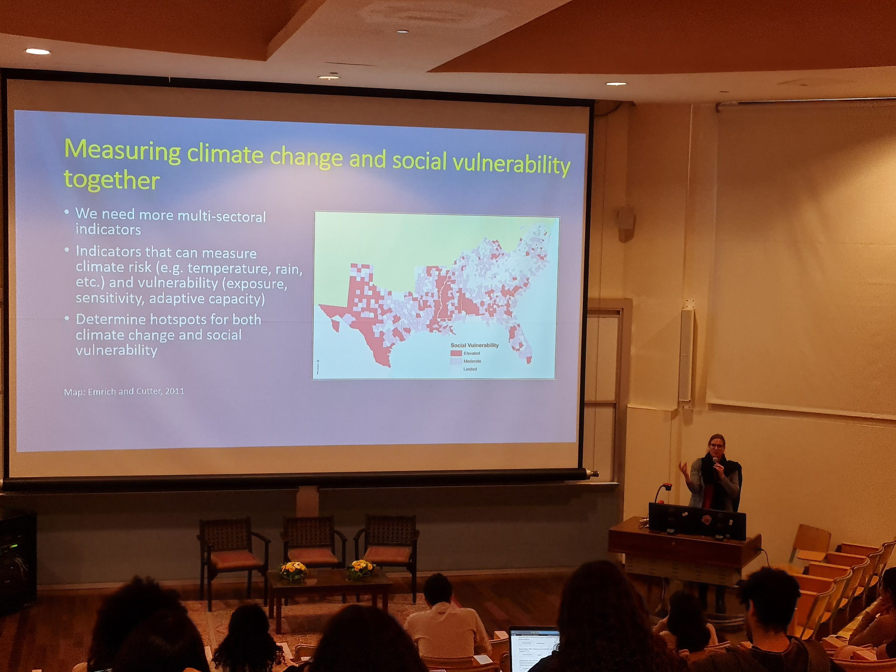
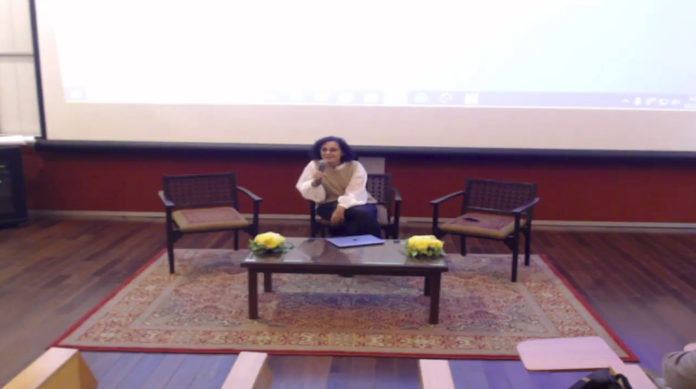

In hindsight, my first semester in the TLS program has been a fantastic experience. Before the semester started, I thought to myself that I could have potentially bitten more than I could chew. And so, I was also careful to list my upcoming deadlines, submissions, sessions, and activities. For the first time in a long time, I am finally able to say that I have succeeded in doing so. After having completed 19 credits while simultaneously taking part in numerous activities and participating in several sessions, I can confidently say that this version of me is more knowledgeable and organized than before.
Overall, I thoroughly enjoyed the course and found it very informative. Being a Computer Science student, I have never taken a Psychology course or even one with a sociological focus. As a result, I have always seen concepts like divorce and IPV as isolated cases. However, after taking this course, I can identify societal and cultural trends which might exacerbate the existing problems. I am also able to point out potential solutions from the literature. I can also point to immensely innovative methods that tackle societal issues preemptively. For example, a custom post-graduate curriculum for pregnant women to help them navigate raising their children and maintaining contact with the workforce, avoiding economic abuse, and facilitating divorce (if the need arises) later on. This course is directly applicable to policy and law. I hope that the articles we have read and the debates we have taken part in happen at the Egyptian Ministry of Justice, Social Solidarity, or Education. One potential improvement would be to hold discussions every two sessions. Assign debate groups (which would have to pre-read and prepare for the content beforehand) at the beginning of the semester, then hold the debate for the first 25 or 30 minutes of each class. This would make the debates more in-depth.
Perhaps the task I enjoyed the most throughout the course was the "Love Collage," where I looked for representations of concepts studied in class in Egyptian media. For the definition of love, I chose a song by Mohamed Fouad called "الحب الحقيقي." For self-care, I chose a scene from "Finding Ola," and for IPV, I chose a scene from "في يوم وليلة."
The course quizzes and final could have been more challenging. By incorporating written questions, the instructor could have ensured that the students understood the course's key concepts. Instead, the exams were multiple choice questions, which often could be answered by elimination.
For the Civic Engagement, Ammar, Omar, Sara, and I volunteered at the Title IX office. Our primary role was researching available Sanction Matrices in US universities and attempting to create a simplified matrix for one violation. We were also encouraged to think of and suggest any potential improvements. Our 8 hours were divided into three stages. In the first stage, we were to research the available matrices, get familiarized with the AUC AHND policy, outline our findings, and report to the Title IX office. This stage took more time than usual as we needed more than 3 hours to familiarize ourselves with the concept of a sanction matrix fully. Also, we realized that most universities need to publish their sanction matrices online. As such, we only had a few examples to learn from. During this stage, we met several times to update each other with our findings before reporting to the office. In our discussions, we realized that the concept of a sanction matrix is self-defeating. We learned that it aims to accomplish two main objectives. The first is to be proof of equitable treatment for the defendant. The second is to provide the office with guidance when making decisions. Due to the qualitative nature of the matrix, it fails to do either. It needs to be more solid proof of equitable treatment, as each severity aggravating/mitigating factor can vary. This is also why it doesn’t serve as a helpful guide when making decisions. For the second and third stages, we constructed an in-depth sanction matrix for the “making unwelcome comments'' with aggravating and mitigating factors.
After completing the 8 hours, I remembered that a perfect way to accomplish the intended objectives of the sanction matrix was to train an AI model to decide the sanction. The input of this model could be either a full report of what happened or the violation, coupled with the mitigating and aggravating factors with a severity rating (1-5). The data would have to be anonymized before usage. This approach would capture the wisdom of all inputted cases and predict the sanction based on the report/violation+mitigating/aggravating factors. It would also provide a confidence rating, which could be used as quantitative proof for the defendant to show how close his punishment is to others who committed similar actions. One challenge when doing this would be whether the data can be used (legally) and how much data is available for use (a lot of information is required to increase the accuracy of the model).
One problem we faced as a group during the 8 hours was communication. Due to final exams, we struggled to communicate and coordinate the timings with the Title IX office effectively. This led to a meeting being rescheduled. Also, at some points, we had to make compromises, for example, attending the meetings as a group of 3 (as opposed to 4), as some members had final exams.
The summary of the three stages:
*NOTE: Instead of doing 2 violations, we did 1 violations, but explored it in depth
For the Well-Being session, I chose the “Healthy Habits: Time Management, Me-Time” session. The instructor discussed the life and ideas of the father of management, Peter Drucker. The session emphasized Drucker’s time management approach, which included three steps. The first was analyzing your time. To practice this step, we did an exercise where we attempted to write how we used the number of hours of the past week to improve our understanding of our use of time. The second step was “cutting time-wasters .”To practice this, we discussed, as a group, which hours we thought could be better utilized. The last step was to “time-block,” We attempted again to write how we felt we could use hour time after removing time-wasters. Finally, the instructor showed us how she uses journaling as another method of time management and reflection. Overall, I was not satisfied with the session. I felt that the session was highly disorganized for a time management session.
Additionally, I felt that most of what was being said, such as “cutting time-wasters,” was obvious. In my time, I researched this matter. I realized that techniques such as “time-boxing” were proven by research to improve time management. However, I was disappointed that they weren’t mentioned in the session. Additionally, while I understand the importance of Drucker’s work, I felt that the time taken by the instructor to discuss his life could have been better used discussing other techniques. Also, while journaling is an important self-reflecting tool, it was not explained how it could be used for time management. Moreover, the topic of “Me-time” was not sufficiently explored, which was disappointing since without managing “me-time,” one can struggle to effectively manage their time.
Ultimately, I believe that the session did not provide new insight into time management. For future sessions relating to this topic, I believe that a strict focus on time management techniques should be kept. Any historical context should be kept to a minimum.
Though the Emotional Intelligence Assessment session was short, it was highly insightful. During the session, we were to fill out a 40-question-long quiz, then input our findings into an excel sheet, which would help us identify our strengths and weaknesses. It would also output a graph, which would help us visualize the results. The table below shows that my top 3 strengths in descending order are:
Graph showing my score on each of the 19 skills tested:
I look forward to doing the same quiz in the near future and seeing if I improve!
The Central Bank’s Data Science session was one of the most informative sessions I have attended all year. Delivered by the Central Bank’s Head of Data Science and Advanced Analytics Hub, Basma Rady, the session outlined the importance of software and machine learning to the modern day functioning of any central bank. Basma outlined how in the last several years, the Egyptian Central Bank has started aggressively hiring data scientists and software engineers to complement its economists. The session also included talks from data scientists which discussed their roles and responsibilities and the tools they use. It was exciting to hear that many of the same tools we use at university are being used to shape fiscal and monetary policy. The group also discussed ways to better prepare ourselves for a career in data science at the bank. They also announced that they would be opening internship and entry-level positions by March!
Unfortunately, the session was during assembly. As I had class directly after the session, I could not attend the full Q&A. However, they provided their LinkedIn accounts so we can reach out if we have any questions.
Overlooking the time issue, the session was highly informative. It has certainly pushed me to attend more industry-related sessions next semester.
Photo taken during Basma's presentation:
During the “Climate and Gender post COP27” session, Dr. Tina Jaskolski outlined several significant gender-related findings from the recent conference. Moreover, Dr. Tina highlighted the disproportionate impact on women and underdeveloped communities. This was because such communities had lower economic capital and thus were limited in the number of options available in any given decision, such as relocation. Dr. Tina emphasized the need for multi-sectoral indicators which could help decision-makers understand the true impact of climate change beyond merely economic and social aspects. Potentially, this could help measure risk and social vulnerability. Dr. Tina also discussed how LEDCs were being mistreated, as they were required to contribute financially without contributing to emissions.
Additionally, the conundrum of reducing emissions for all countries, even those in the process of industrialization, was discussed. This was particularly interesting as industrialization is an essential tool for poverty alleviation, but on the other hand, it will increase carbon emissions and is detrimental to the environment. Due to economic turbulence, Dr. Tina highlighted that countries have yet to fulfill their financial pledges.
On the other hand, as pointed out by an audience member in the Q&A, several of Dr. Tina’s points seem to indicate that the core issue was gender inequality. This made the session lose focus a few times. While gender equality is of substantial importance, it was not the conference's focus. The disparity in adverse effects could be minimized by attempting to solve the climate problem.
Overall, I enjoyed the exciting findings discussed by Dr. Tina throughout the session. Many points were highly thought-provoking. The session also made clear that the underlying economic and political situation tends to be the real decision-maker when it comes to climate conferences. I found this disappointing, as such issues have the power to ruin the livelihoods of millions in the coming decades. Despite this, governments have failed to act.
Photo taken during Dr. Tina's presentation:
During the “Women in Cinema” session, Dr. Maggie talked about female representation in Egyptian cinema behind and in front of the director’s lens. Dr. Maggie emphasized that often a “women filmmaker” might not be a desirable label for female filmmakers. This is because it can sometimes come across as belittling as if men direct films; they are not called “men filmmakers” but instead just “filmmakers.” Despite this, Dr. Maggie emphasized that authentic stories often manifest the filmmaker’s experiences and outlook. This remark posed an interesting question: “Can authentic stories be told without being part of the filmmaker’s experience?”. I believe authenticity can still be achieved since a film involves others, such as actors, who can bring the characters and story to life.
We watched and reflected on a short film directed by Dr. Maggie. It was called “Meir on Map” and was about an Egyptian teenager from a village called Meir who attempts to fly LED balloons to get her town seen by Google Maps. She was initially discouraged by her female friends. Over time, she convinces her female friends, gathers them, and flies the balloons to the surprise of everyone, including her parents. To my surprise, Dr. Maggie thought this was a bad film. She outlined that she was somewhat creatively restricted by the partner organization, which hindered its authenticity. She wanted to capture some elements, such as that many fathers from the village traveled to Kuwait for work. Additionally, though I thought the film presented the underlying messages in a cliche manner, Dr. Maggie pointed out that this was because the intended audience was children, which would’ve struggled to grasp the idea if it had been presented subtly.
Overall, I was intrigued by the session as it was my first time listening to the director discussing their thought process and how it translated to a final product.
Photo taken during Dr. Maggie's talk:
As the co-head of the web Development division of the Google Student Developers Club, my role throughout the semester was to try to create a rough timeline and plan for future events next term. This is because the clubs focused this semester on quantum computing and cyber security sessions. As such, we were assigned planning for this semester. The club's heads instructed us to prepare ourselves to be able to teach web development sessions. As such, I tried to spend a few evenings a week learning about web development tools such as Python. While I found Python very easy to use, I needed to refresh my memory on how it can be used to create a backend for a website. And so, I started going over old side-projects I have done to re-familiarize myself with all the different tools and techniques. I have also tried to strictly use Python in any university-related projects so that I am better prepared for teaching sessions next semester. Also, I have made a shortlist of potential guest speakers, including some of my instructors from my internships, to complement any session next semester.
Unfortunately, as the club has sought to focus on the quantum computing and cyber security tracks, I could not teach any sessions as I am inexperienced in these areas.
Though there were no gender-related activities, I think planning and delivering an event on “women in tech” could be exciting. We could invite “Mirna Aref” and “Fatma El Shenawy,” both of which are AUC alumni! The former is the Head of Microsoft in Egypt, and the latter is the co-founder and Chief Strategy Officer of Khazna.
I would say, by far, the biggest challenge I have faced this semester with the heavy course load I was taking. This limited my participation to planning and practicing. Since I am taking a slightly lighter course load next semester, I plan to not only teach sessions on web development but learn more about other topics so that I can teach them.
Despite being initially overwhelmed with 19 Credit Hours, in hindsight, I found this semester to be highly fruitful. I have learned that if I manage my time correctly and list the deadlines and submissions, I can always get more done and avoid procrastination. This newfound time management skill helped me perform academically and attend many exciting TLS sessions and activities. I have met numerous people and discovered many new areas of interest, which I plan to explore next semester. My biggest takeaway from the sessions and activities is that there is always another gendered and sociological dimension to every topic. To provide an equitable solution for all, one must always consider it.
With a slightly lighter course load next semester, I plan to participate in even more extracurricular activities, attend even more sessions, and help out with the symposium!